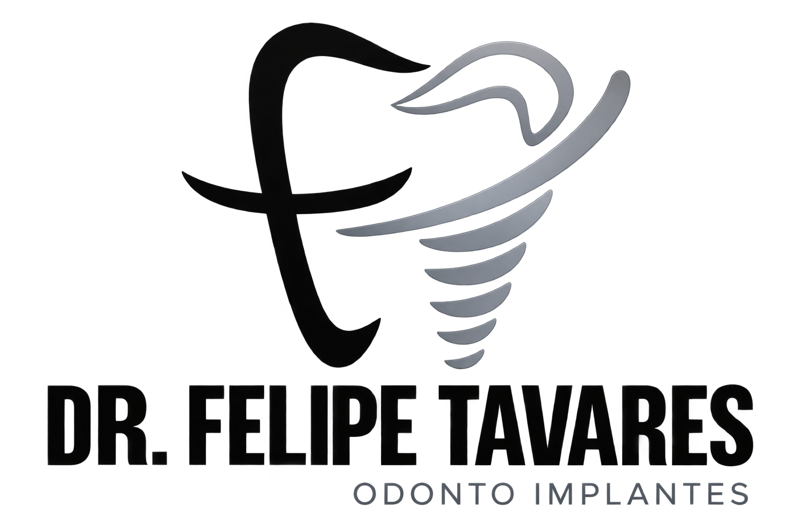
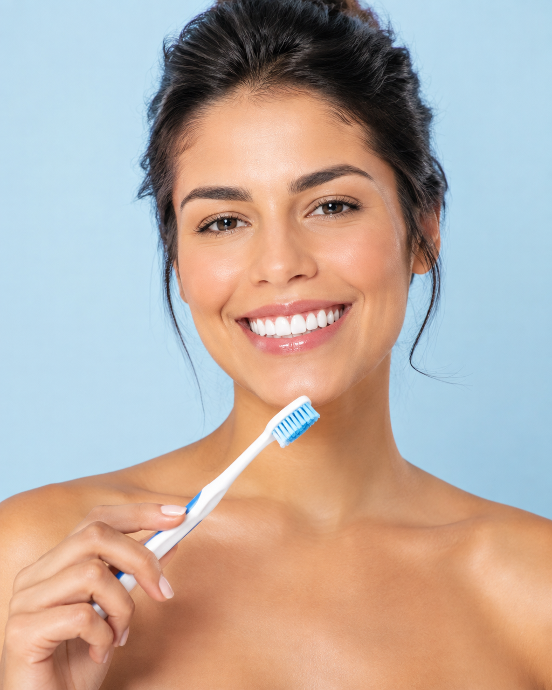
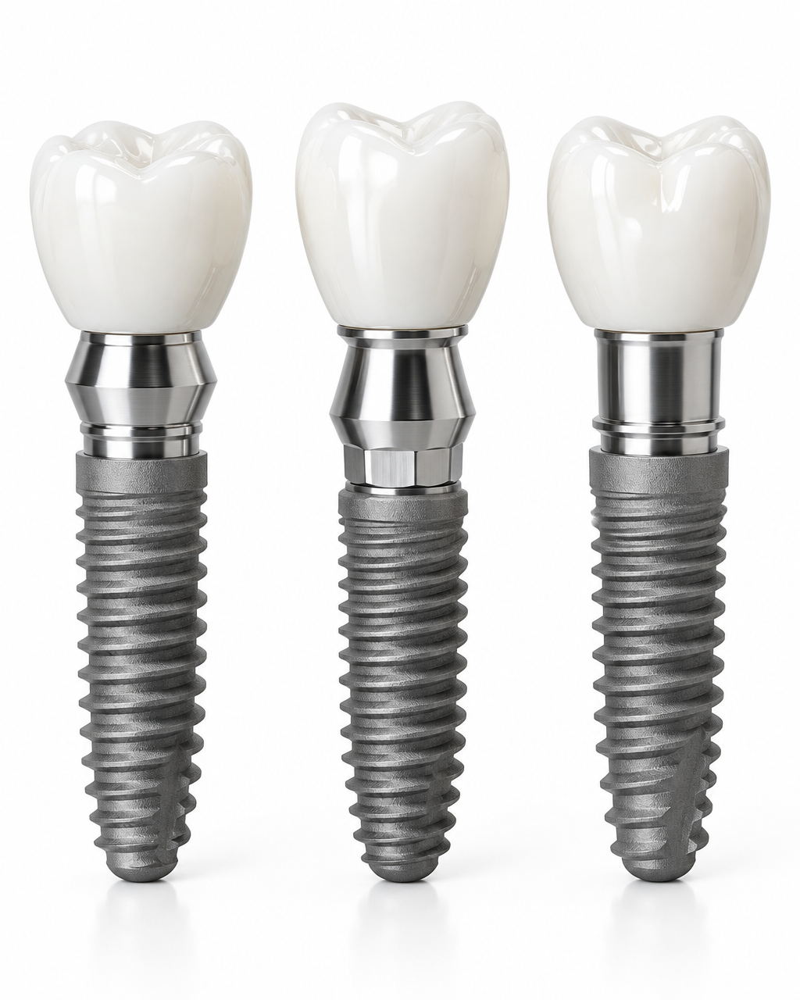
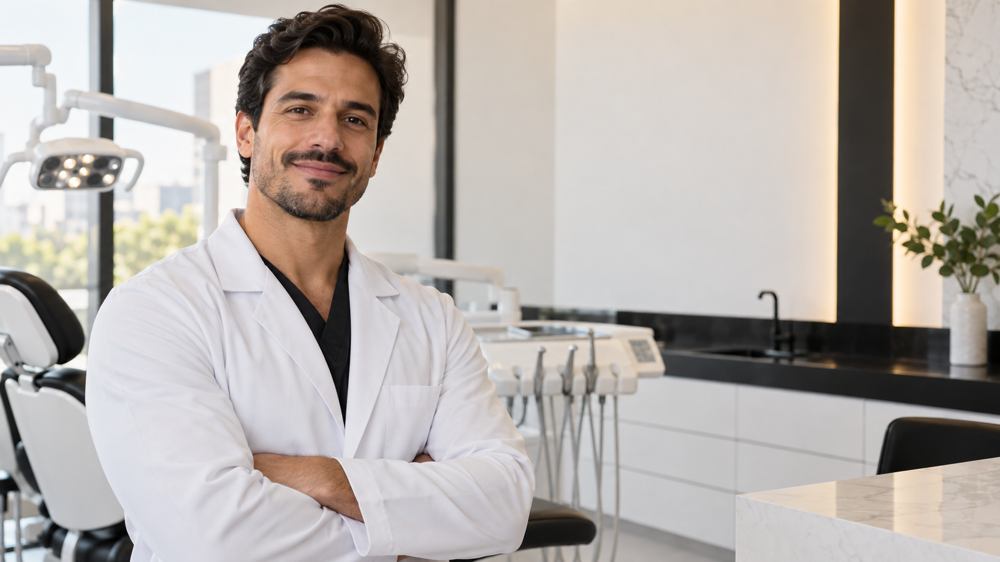

Implantes dentários
Reabilitação completa para recuperar função, segurança e naturalidade.

Agendar consulta ↗
Conheça o método do Dr. Felipe — precisão, transparência e acolhimento em cada etapa.

Atendimento humanizado, diagnóstico preciso e planos de tratamento claros.
Você conhece o plano, as etapas e tudo que vem a seguir desde o primeiro dia.
Técnicas avançadas e experiência para devolver sua confiança.
Graduado pela UFMG em 2007 e especialista em implantes, uno experiência clínica, técnicas avançadas e um olhar próximo para entregar segurança em cada etapa.
Transformar vidas através de uma odontologia cuidadosa, precisa e acessível.

Precisão técnica com um atendimento que acolhe. Encontre o caminho mais leve para o sorriso que você deseja.
Reabilitação completa para recuperar função, segurança e naturalidade.
Planejamento individualizado para devolver conforto e qualidade de vida.
Detalhes que valorizam sua identidade com resultados leves e naturais.
O melhor dentista da cidade. Muito dedicado em tudo que faz e super atencioso.
Agende uma avaliação e descubra um plano feito para você.